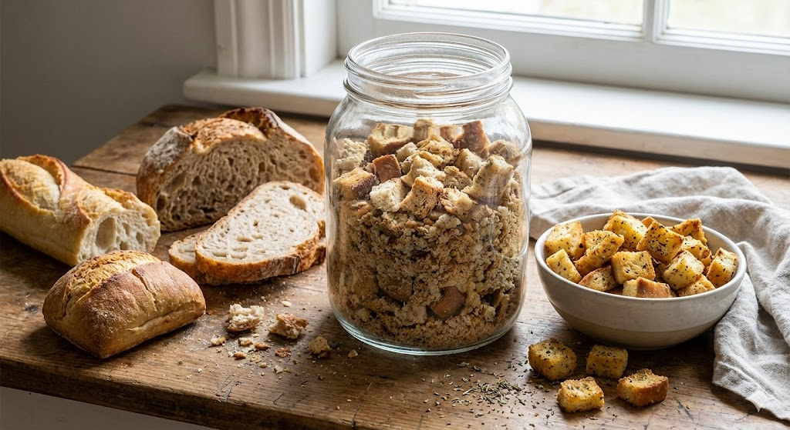

Das zweite Leben: Resteverwertung
Brot wegzuwerfen ist in vielen Kulturen tabu. Trockenes Brot ist kein Abfall, sondern ein wertvoller Rohstoff voller Aroma und Röststoffe.
1. Altbrot als Zutat im neuen Brot
Das Brühstück
Profis mahlen altes, geröstetes Brot zu Pulver. Dieses Pulver wird mit kochendem Wasser überbrüht.
Der Effekt: Das Altbrot saugt extrem viel Wasser auf. Gibt man dieses "Brühstück" in einen neuen Teig, bleibt das Brot viel länger frisch und schmeckt aromatischer (durch die doppelte Maillard-Reaktion der alten Kruste).
2. In der Küche
Vom Knödel bis zum Salat: Brot ist ein Schwamm für Saucen.
- Semmelknödel: Nutzen die Struktur von altbackenen Brötchen, um Milch und Ei zu binden.
- Panzanella: Italienischer Brotsalat. Hartes Brot saugt Tomatensaft und Olivenöl auf.
- Armer Ritter (French Toast): In Ei-Milch getränkt und gebraten.